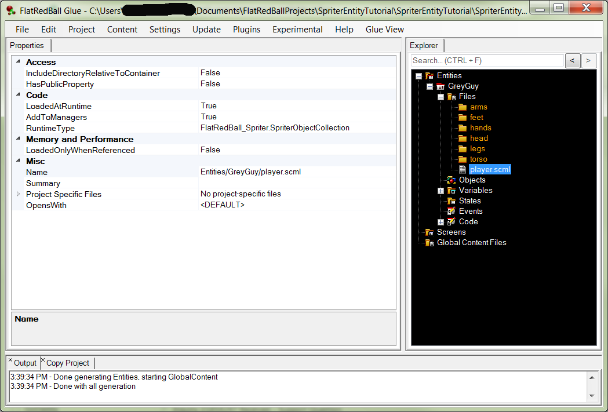
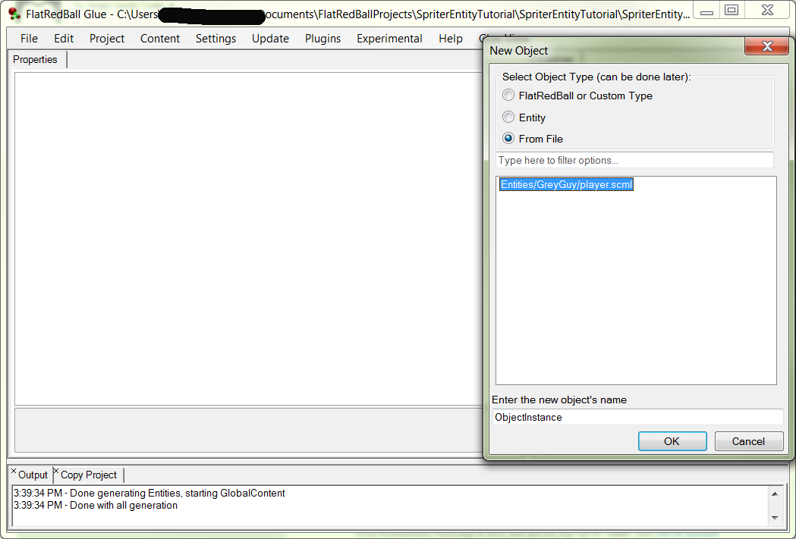
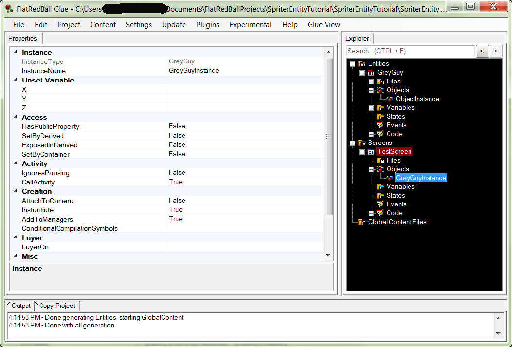

So, we already have the
In the previous tutorial, you learned how to load an existing Spriter animation into your Glue project. But, we did that into a screen. In this tutorial, we will be loading it into an Entity. This works almost exactly the same way as with Screens.
In Glue, choose an existing Entity or add an Entity by right clicking on "Entities" and selecting "Add Entity"
Choose a name, and then click ok
Right click on Files, and choose add file, new file, navigating to the player.scml file from the prior tutorial.
If you did it right, you should end up with something like this:
In order to use a spriter animation in an entity, you have to add an object. Glue Assumes if you're adding a file directly to a screen, you want to see it, so it automatically adds it to the managers. This is not so with an Entity, because it's not clear what your intent is for this file. When you add an object from a file, though, Glue assumes that you want it to be tangible, so it clones the object and adds to managers.
That said, here is what you need to do.
Select the From File radio button, and select the file in the list:
Click ok.
Now you have an object instance that's tied back to the file, but you have to tell Glue what part of the file to use.
Notice how it gives you two options? Most of the time, you will probably be choosing a SpriterObject instead of the SpriterObjectCollection, because it refers to a single Spriter Entity as defined in the Spriter project. If you had multiple Spriter Entities in the Spriter project, they would all show up here in the dropdown, and you could add the project file once while adding objects for the different entities.
Your project should now look something like this:
Go ahead and run the game now, and you should see the idle animation again. Now you're ready to add game logic, which in this case is just going to be making him walk.
All that's left is to make him walk now!
Run the game, and you should now be able to press the right and left arrows and watch him walk. When you let up on both arrows, the idle animation plays.